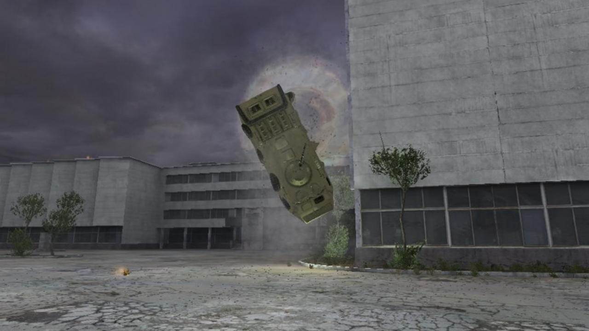
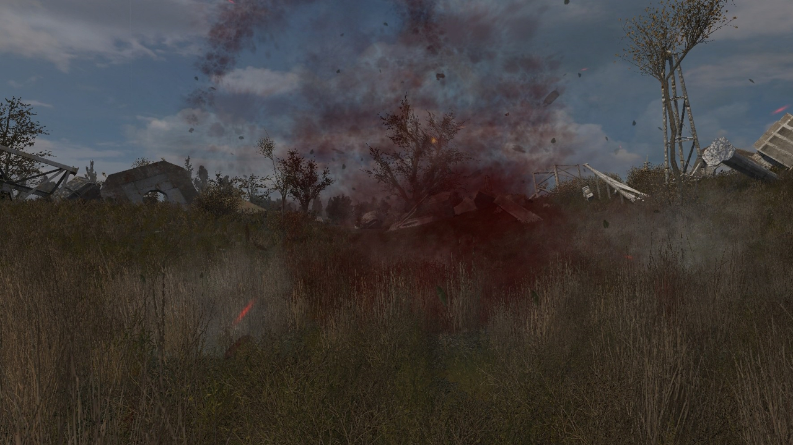
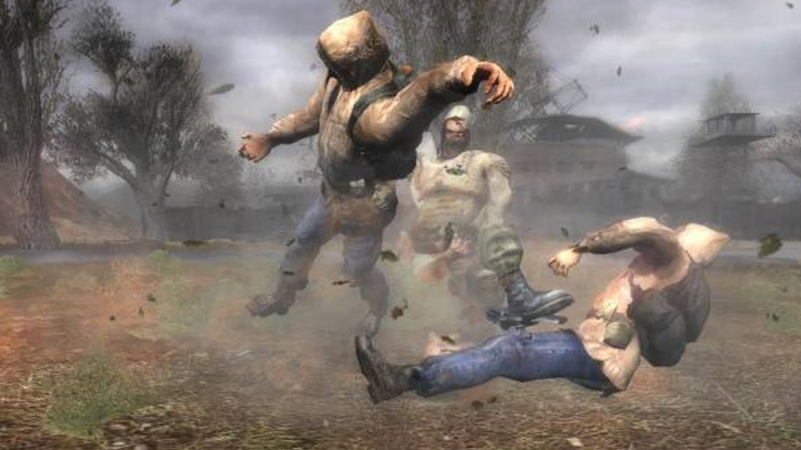
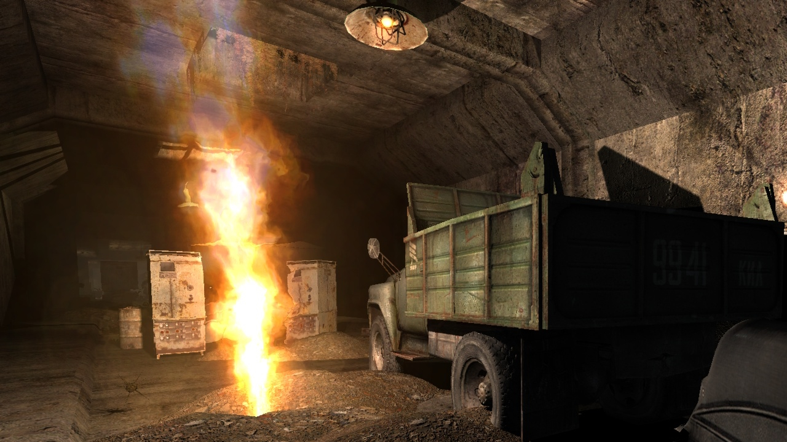
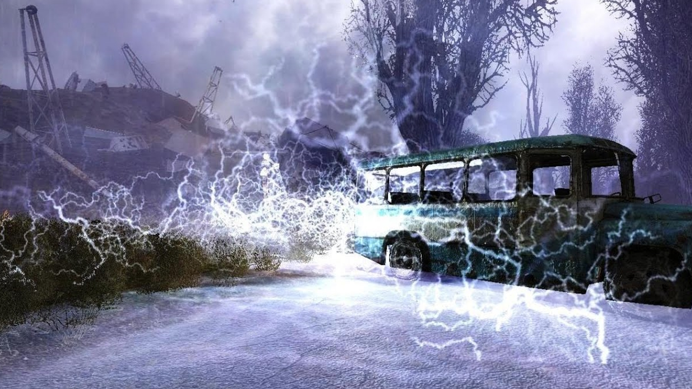
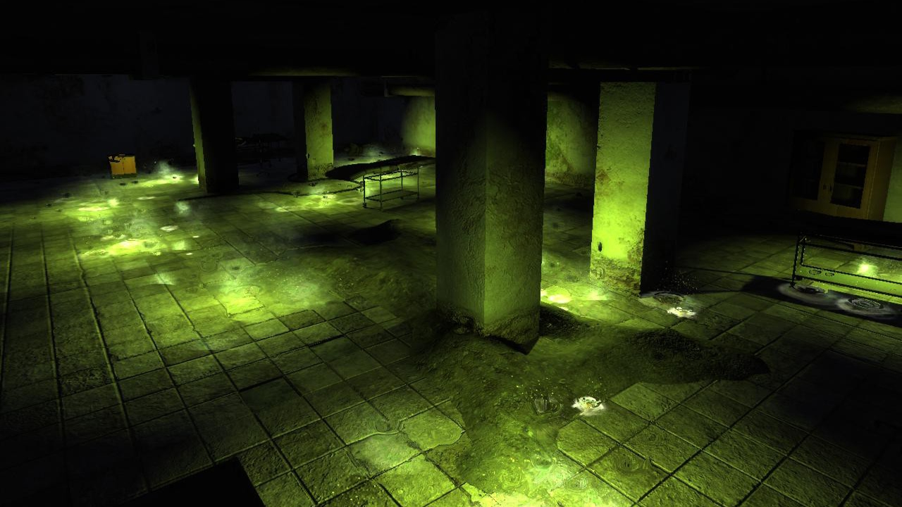
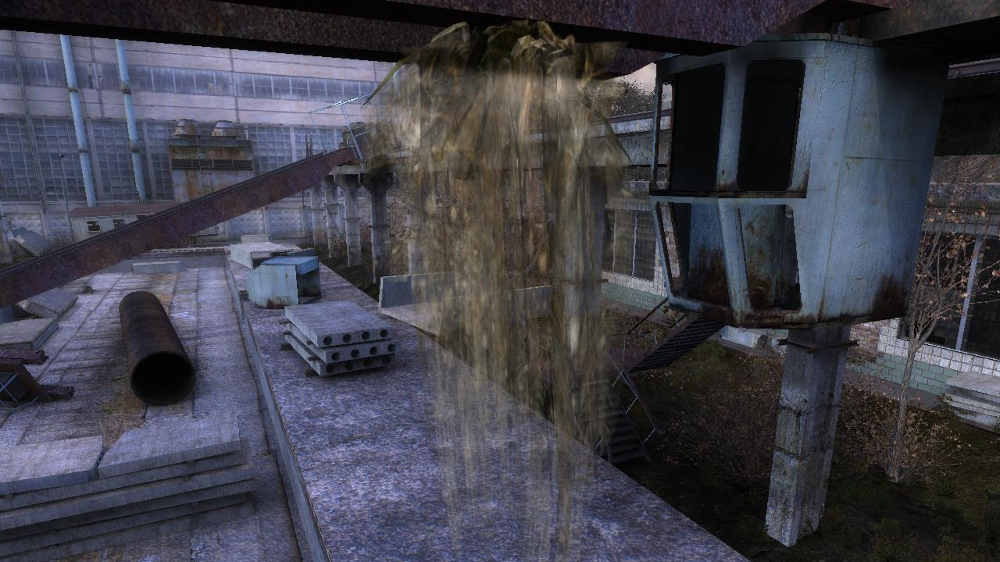
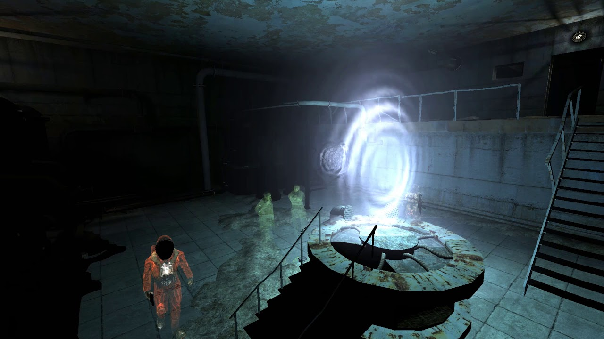

Аномалии
Трамплин
Одна из первых аномалий, обнаруженных человеком. Наносит урон гравитационной «волной», сметая всё на своём пути. «Трамплин» кочует по Зоне, оставаясь на одном месте примерно неделю, и чем дольше она находится в выбранной локации, тем сильнее становится. Следовательно, и травмы после попадания в эту аномалию бывают разными: от синяков до летального исхода. Днём её легко заметить – на земле под «Трамплином» красно-бурые пятна, листва в ней кружится, будто сама по себе, в воздухе видны искажения. Эту аномалию обнаруживает любой детектор, и она реагирует на подброшенные в неё предметы.
Воронка
Опаснейшая гравитационная аномалия. «Воронка» втягивает в себя всё, что находится рядом, сжимает в плотный комок, а затем разрывает на части - выжить после такого шанса нет. Она всегда находится на одном месте. Движением воздуха и листьев «Воронка» похожа на «Трамплин», но тёмное пятно лишь одно, в центре, и вокруг разбросаны фрагменты несчастных, попавших в ловушку. Ночью эта аномалия очень опасна, ведь может быть обнаружена только детекторами и металлическими предметами.
Карусель
У этой ужасной аномалии есть и другое название – «Мясорубка» – и оно подходит ей куда больше. Она поднимает в воздух любого, кто попадёт в неё, раскручивает и рвёт на части. «Карусель» можно распознать по лёгкому пылевому ветру и разбросанным частям тел вокруг. Если вас затягивает в эту аномалию – не паникуйте и постарайтесь отпрыгнуть в сторону, подальше от центрального вихря. Тогда, возможно, получится выбраться. Это последняя гравитационная аномалия, настало время перейти к термическим.
Жарка
Распространённая аномалия термического типа. При попадании в неё любого предмета или живого существа образует огненную воронку, разогретую до 1500К. Обнаружить «Жарку» можно только мощными детекторами и металлическими предметами. Часто появляется в подвалах, тоннелях и низинах.
Электра
«Электра» - опасная аномалия диаметром до 10 метров, накапливающая статическое электричество. Попадание в неё смертельно почти всегда – десятки небольших молний не оставляют шанса. Днём над «Электрой» виден голубой туман, а ночью её можно обнаружить любым детектором или броском болта. В Зове Припяти есть один способ прохождения этой аномалии – «разрядить» её броском металлического предмета и пробежать, пока «Электра» не зарядилась снова.
Кисель
Токсичная светящаяся жижа ярко-зелёного цвета, которую легко заметить, но тяжело пройти без повреждений. Сталкеры называют её по-разному – «студень», «холодец» и даже «слизь» - но общепринятым считается «Кисель». Аномалия труднопроходима из-за кислоты, разъедающей кожу, и ядовитых испарений. Хорошо помогает костюм с замкнутым контуром дыхания и высокой химической защитой – тогда урон становится минимальным.
Жгучий пух
Первое растение-эндемик Зоны. Внешне напоминает лишайник бледно-серого цвета, свисающий с веток и проводов. Встречается повсеместно. По какой-то причине не реагируют на медленно движущиеся объекты, но всё равно наносят повреждения, если слишком приблизиться. Быстрых существ атакует облаком частиц, разъедающих голую и слабозащищённую кожу. Лучше всего не подходить к ним близко, и двигаться возле «Жгучего пуха» как можно медленней. Теперь самые загадочные аномалии – пространственные.
Телепорт
Удивительная аномалия, переносящая сталкера из одного места в другое. Выглядит как движущаяся бело-голубая воронка и чаще всего встречается возле ЧАЭС, ближе к центру Зоны. Некоторые из них контролируются О-Сознанием и из них появляются монолитовцы, другие возникают произвольно. Сам по себе «Телепорт» опасности не представляет, в отличии от «Пузыря», но вы всё равно никогда не будете знать, куда он вас отправит. Теперь вы знаете какие есть аномалии в Сталкере.